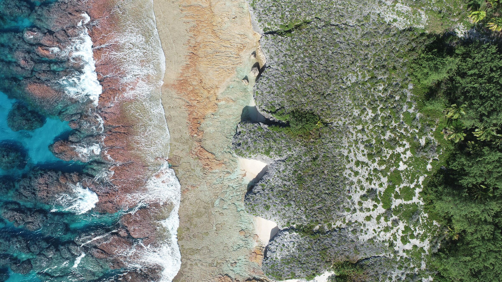
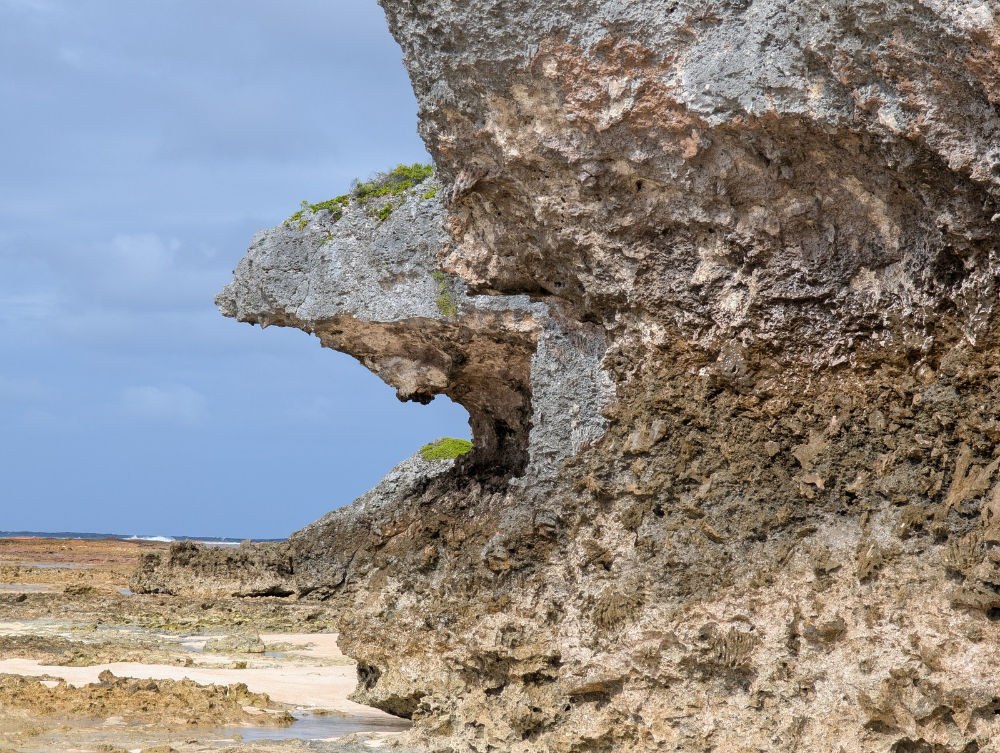

Follow the evidence into the field. Coastlines, reefs, and rock layers connect our questions to real places.
Start with a field story, inspect a digital outcrop, or explore the observations in our maps and photographic archive.
Cook Islands expedition Maps & photographs Regional albums 
Mitiaro’s west coast · Ocean, reef flat, limestone, and forest in one landscape. Cook Islands, 2026. Living reefs and raised limestone offer complementary views of coastal change. In May and June 2026, the HiSEAS field team worked across Rarotonga, Atiu, Mangaia, Mauke, and Mitiaro.
The expedition report brings together field observations, maps, photographs, and the questions they raise. It was prepared for island leaders, schools, communities, and project partners.
Part of HiSEAS , with thanks to the island communities and partners who made the fieldwork possible.
Three ways to look closer. Each field day brings a different view of how reefs grow, erode, and become part of the geological record.

Te Rotonui, Mitiaro · 10 June 2026
A photograph shows texture. A digital outcrop adds the shape of the coast. Explore how those views connect to field observations and samples.
Start the guided experience → Mauke · 7 June 2026
Compare the reef with the rock. Field notes at Uriaata connect observations of modern microatolls, coastal erosion, and corals preserved in the limestone.
Follow the day’s observations → Atiu · 28 May 2026
Read the coast at different scales. From the texture of reef limestone to the shape of a coastal bench, a day’s observations connect individual features to their setting.
Open the field notebook → Choose your route into the archive. The field atlas organizes sites and their evidence. The photo library lets you follow a place, feature, or moment across the wider collection.
Field atlas Explore sea-level sites in the Bahamas, Turks and Caicos, Barbados, and Hawai‘i, with maps, notes, and associated observations.
Open the atlas Cook Islands site records Orthomosaics, digital outcrops, photographs, sample records, and survey observations from the 2026 expedition.
Explore expedition sites Daily field notebook Follow the field days through mapped observations and notes. The expedition report provides the edited overview.
Browse daily logs Search field photographs. Places behind the research. Explore tropical coastlines and deep-time sedimentary records, from the Cook Islands to the Canadian Rockies and the western United States.
Raised reefs, living corals and fieldwork in the Southern Cook Islands.
Open album Fossil reefs, beaches, and modern analogs that help understand last interglacial sea level.
Open album Field imagery from reef, dune, and coastal outcrop settings.
Open album Sections and landscapes that reveal the stratigraphic insides of shallow water carbonate systems.
Open album Sections and landscapes that reveal the stratigraphic insides of shallow water carbonate systems.
Open album Sections and landscapes that reveal the stratigraphic insides of shallow water carbonate systems.
Open album Measured sections, back-country camping, high mountain field sites, and Paleozoic carbonate stratigraphy.
Open album Classic coral-reef terraces and coastal markers used to constrain interglacial sea-level history.
Open album Field photography from the Bahamas tied to long-running work on coastal stratigraphy and last interglacial sea level.
Open album Flinders Ranges outcrops that frame Snowball Earth, cap carbonates, and Ediacaran stratigraphy.
Open album No geology here, just some field photos from a trip to Indonesia.
Open album From the field to your own question. Graduate research can connect these observations to geochemistry, geological time, or models of landscape evolution.
Explore graduate opportunities